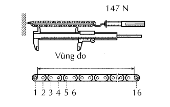
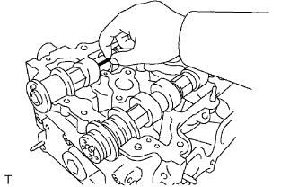
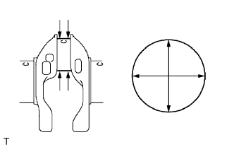

ĐỘNG CƠ > KIỂM TRA |
| 1. KIỂM TRA VÒI DẦU |
Kiểm tra hư hỏng hay tắc của vòi dầu.
Nếu cần thiết, hãy thay vòi dẫn dầu.
| 2. KIỂM TRA XÍCH |
|  |
Kéo xích với một lực 15 kgf như được chỉ ra trên hình vẽ.
Dùng một thước kẹp, đo chiều dài của 16 mắt xích.
| 3. KIỂM TRA TRỤC CAM |
 |
Kiểm tra độ đảo của trục cam.
Đặt trục cam lên các khối V.
Dùng đồng hồ so, đo độ đảo tại cổ trục giữa.
 |
Dùng Panme, đo chiều cao của vấu cam.
 |
Dùng Panme, đo đường kính cổ trục.
| Cổ trục | Điều kiện tiêu chuẩn |
| Cổ trục số 1 | 35.949 đến 35.965 mm (1.4153 đến 1.4159 in.) |
| Các cổ trục khác | 26.959 đến 26.975 mm (1.0614 đến 1.0620 in.) |
| 4. KIỂM TRA TRỤC CAM SỐ 2 |
 |
Kiểm tra độ đảo của trục cam.
Đặt trục cam lên các khối V.
Dùng đồng hồ so, đo độ đảo tại cổ trục giữa.
 |
Dùng Panme, đo chiều cao của vấu cam.
|
Dùng Panme, đo đường kính cổ trục.
| Cổ trục | Điều kiện tiêu chuẩn |
| Cổ trục số 1 | 35.949 đến 35.965 mm (1.4153 đến 1.4159 in.) |
| Các cổ trục khác | 26.959 đến 26.975 mm (1.0614 đến 1.0620 in.) |
| 5. KIỂM TRA BÁNH RĂNG PHỐI KHÍ TRỤC CAM (SỰ VẬN HÀNH CỦA BỘ ĐIỀU KHIỂN VVT) |
 |
Kiểm tra sự khoá cứng của bánh răng phối khí trục cam.
Kẹp trục cam lên êtô và kiểm tra rằng bánh răng phối khí trục cam bị hãm cứng.
Nhả chốt hãm.
Bịt 4 đường dầu của cổ trục cam bằng băng dính như trên hình vẽ.
Làm thủng băng dính của đường dầu sớm và đường dầu muộn bên phía đối diện với lỗ của đường dầu sớm.
 |
Cấp áp suất khí nén khoảng 200 kPa (2.0 kgf/cm2, 28 psi) vào các lỗ của đường dầu đã làm thủng băng dính ở quy trình trên.
 |
Kiểm tra rằng bánh răng phối khí trục cam quay sang phía sớm khi giảm áp suất cấp vào đường muộn.
Khi bánh răng cam đạt tới vị trí muộn nhất, hãy ngừng cấp áp suất khí vào phía muộn rồi đến phía sớm theo đúng thứ tự.
Kiểm tra sự quay êm dịu.
Quay bánh răng phối khí trục cam trong phạm vi dịch chuyển của nó một vài lần, nhưng không được quay đến vị trí muộn nhất. Kiểm tra rằng bánh răng quay êm.
Kiểm tra sự khoá cứng của tại vị trí muộn nhất.
Chắc chắn rằng bánh răng phối khí trục cam bị khoá tại vị trí muộn nhất.
| 6. KIỂM TRA BỘ CĂNG XÍCH |
 |
Dịch chuyển tấm hãm lên trên để nhả khoá. Đẩy píttông và kiểm tra rằng nó chuyển động êm.
| 7. KIỂM TRA ĐĨA XÍCH PHỐI KHÍ TRỤC CAM |
Đo khoảng cách giữa đỉnh răng của đĩa xích mòn nhất và bắt đầu vùng mòn dưới đỉnh răng.
Quấn xích quanh đĩa xích cam.
Dùng một thước kẹp, đo đường kính đĩa xích bao gồm cả xích.
| 8. KIỂM TRA BÁNH RĂNG PHỐI KHÍ TRỤC CAM |
 |
Đo khoảng cách giữa đỉnh răng mòn nhất và bắt đầu vùng mòn dưới đỉnh răng.
Quấn xích quanh bánh răng phối khí.
Dùng một thước kẹp, đo đường kính đĩa xích bao gồm cả xích.
| 9. KIỂM TRA ĐĨA XÍCH TRÊN TRỤC KHUỶU |
Đo khoảng cách giữa đỉnh răng của đĩa xích mòn nhất và bắt đầu vùng mòn dưới đỉnh răng.
Quấn xích quanh đĩa xích dẫn động.
Dùng một thước kẹp, đo đường kính đĩa xích bao gồm cả xích.
| 10. KIỂM TRA RAY TRƯỢT BỘ CĂNG XÍCH |
Dùng một thước kẹp, đo độ mòn của ray trượt của bộ căng xích.
| 11. KIỂM TRA BỘ GIẢM RUNG XÍCH |
Dùng một thước kẹp, đo độ mòn của bộ giảm rung xích.
| 12. KIỂM TRA DẪN HƯỚNG XÍCH CAM |
Dùng một thước kẹp, đo độ mòn của dẫn hướng xích cam.
| 13. KIỂM TRA BULÔNG BẮT NẮP QUY LÁT |
Dùng thước kẹp, đo đường kính nhỏ nhất của ren thắt lại tại điểm đo.
| 14. KIỂM TRA BỘ ĐIỀU CHỈNH KHE HỞ XUPÁP |
 |
Đặt bộ điều chỉnh khe hở xupáp vào khay chứa đầy dầu động cơ.
Cắm đầu của SST vào píttông của bộ điều chỉnh khe hở xupáp và dùng đầu này ấn viên bi một chiều xuống vào bên trong píttông.
Nén SST và bộ điều chỉnh khe hở xupáp vào nhau để dịch chuyển píttông lên xuống 5 đến 6 lần.
Kiểm tra sự dịch chuyển của píttông và xả khí.
Sau khi xả khí, hãy tháo SST. Sau đó, thử đẩy nhanh và chắc píttông bằng một ngón tay.
| 15. KIỂM TRA ĐỘ VÊNH CỦA NẮP QUY LÁT |
Dùng một thước thẳng và thước lá, đo độ vênh của bề mặt tiếp xúc của thân máy và các đường ống nạp hoặc xả.
| 16. KIỂM TRA NỨT CỦA NẮP QUY LÁT |
 |
Dùng dung dịch màu, kiểm tra các cổng nạp và cổng xả hoặc bề mặt xi lanh xem có có vết nứt không?
Nếu bị nứt, hãy thay thế nắp quy lát.
| 17. KIỂM TRA ĐẾ XUPÁP NẠP |
Bôi một lớp mỏng bột màu lên bề mặt xupáp.
Ấn nhẹ mặt xupáp tì vào đế xupáp.
Kiểm tra mặt xupáp và đế xupáp theo quy trình sau.
Nếu bột màu xuất hiên quanh toàn bộ bề mặt xupáp, thì mặt xupáp là đồng tâm. Nếu không, hãy thay thế xupáp.
Nếu bột màu xuất hiên quanh toàn bộ bề đế xupáp, thì dẫn hướng và mặt xupáp là đồng tâm. Nếu không, hãy rà lại đế xupáp.
Kiểm tra rằng mặt tiếp xúc đế xupáp nằm giữa của mặt xupáp có độ rộng từ 1.0 đến 1.4 mm (0.039 đến 0.055 in.).
| 18. KIỂM TRA ĐẾ XUPÁP XẢ |
Bôi một lớp mỏng bột màu lên bề mặt xupáp.
Ấn nhẹ mặt xupáp tì vào đế xupáp.
Kiểm tra mặt xupáp và đế xupáp theo quy trình sau.
Nếu bột màu xuất hiên quanh toàn bộ bề mặt xupáp, thì mặt xupáp là đồng tâm. Nếu không, hãy thay thế xupáp.
Nếu bột màu xuất hiên quanh toàn bộ bề đế xupáp, thì dẫn hướng và mặt xupáp là đồng tâm. Nếu không, hãy rà lại đế xupáp.
Kiểm tra rằng mặt tiếp xúc đế xupáp nằm giữa của mặt xupáp có độ rộng từ 1.0 đến 1.4 mm (0.039 đến 0.055 in.).
| 19. KIỂM TRA KHE HỞ DỌC TRỤC TRỤC CAM |
Dùng đồng hồ so, đo khe hở dọc trục trong khi lắc trục cam ra phía trước và phía sau.
| 20. KIỂM TRA KHE HỞ DẦU TRỤC CAM |
|  |
Lau sạch các nắp bạc và các cổ trục cam.
Đặt các trục cam lên nắp quy lát.
Đặt một đoạn dây nhựa lên các cổ trục cam.
Lắp các nắp bạc.
  |
Lắp trục cam và trục cam số 2 như được như chỉ ra trên hình vẽ.
 |
Lắp lỏng nắp bạc trục cam số 1.
Kiểm tra vị trí chính xác của từng nắp bạc trục cam No.2 và lắp từng nắp.
Lắp gioăng chữ O mới vào nắp bạc trục cam số 1.
Lắp lỏng ống phân phối dầu.
Xiết chặt 21 bu lông theo thứ tự như trên hình vẽ.
Tháo các nắp bạc.
 |
Nới lỏng đều tay và tháo 21 bulông nắp bạc trên các trục cam qua một vài lần theo thứ tự như trong hình vẽ. Sau đó tháo ống phân phối dầu, gioăng chữ O và 9 nắp bạc.
Tháo 2 trục cam.
Đo dây nhựa tại điểm rộng nhất.
| Cổ trục | Khe hở dầu |
| Cổ trục số 1 | 0.035 đến 0.072 mm (0.0014 đến 0.0029 in.) |
| Các cổ trục khác | 0.025 đến 0.062 mm (0.0010 đến 0.0028 in.) |
Bóc toàn bộ dây nhựa.
| 21. KIỂM TRA LÒ XO NÉN |
Dùng một thước kẹp, đo chiều dài tự do của lò xo nén bên trong.
 |
Dùng một ke vuông, đo độ lệch của lò xo nén bên trong.
| 22. KIỂM TRA XUPÁP NẠP |
Dùng một thước kẹp, đo chiều dài toàn bộ của xupáp.
Dùng Panme, đo đường kính thân xupáp.
Dùng một thước kẹp, đo độ dày nấm xupáp.
| 23. KIỂM TRA XUPÁP XẢ |
Dùng một thước kẹp, đo chiều dài toàn bộ của xupáp.
Dùng Panme, đo đường kính thân xupáp.
Dùng một thước kẹp, đo độ dày nấm xupáp.
| 24. KIỂM TRA BẠC DẪN HƯỚNG XUPÁP NẠP |
Dùng đồng hồ so, đo đường kính trong của bạc dẫn hướng xupáp.
Trừ giá trị đo đường kính trong của bạc dẫn hướng cho giá trị đo của đường kính thân xupáp.
| 25. KIỂM TRA BẠC DẪN HƯỚNG XUPÁP XẢ |
Dùng đồng hồ so, đo đường kính trong của bạc dẫn hướng xupáp.
Trừ giá trị đo đường kính trong của bạc dẫn hướng cho giá trị đo của đường kính thân xupáp.
| 26. KIỂM TRA THÂN MÁY |
Kiểm tra độ vênh.
Dùng một thước thẳng và thước lá, đo độ vênh của bề mặt tiếp xúc của gioăng nắp quy lát.
Kiểm tra bằng quan sát xem thành xi lanh có bị xước không?
Nếu có vết xước sâu xuất hiện, hãy doa lại tất cả 4 xilanh. Nếu cần thiết, hãy thay thế thân máy.
Kiểm tra đường kính xi lanh.
Dùng đồ hồ đo lỗ, đo đường kính xilanh tại các điểm A, B và C theo phương hướng kính và hướng trục.
Kiểm tra gờ xi lanh.
Nếu mòn ít hơn 0.2 mm, hãy dùng mũi doa, mài đỉnh xilanh.
| 27. KIỂM TRA PÍT TÔNG CÙNG VỚI CHỐT |
Kiểm tra khe hở dầu píttông.
Dùng Panme, đo đường kính píttông tại vị trí vuông góc với đường tâm của píttông và cách đỉnh của píttông một khoảng nhất định.
| Cỡ píttông | Điều kiện tiêu chuẩn |
| Tiêu chuẩn | 85.951 đến 85.986 mm (3.3839 đến 3.3853 in.) |
| O/S 0.50 | 86.431 đến 86.486 mm (3.4028 đến 3.4050 in.) |
Đo đường kính xi lanh theo phương dọc trục.
Trừ giá trị đo đường kính xilanh cho giá trị đo của đường kính píttông.
Kiểm tra sự lắp ráp của chốt píttông.
Tại nhiệt độ 60°C (140°F), kiểm tra rằng chốt định vị có thể ấn vào lỗ píttông được bằng ngón tay của bạn.
Kiểm tra đường kính chốt píttông.
Dùng Panme, đo đường kính chốt píttông.
| Size Mark | Điều kiện tiêu chuẩn |
| A | 21.997 đến 22.000 mm (0.86602 đến 0.86614 in.) |
| B | 22.001 đến 22.003 mm (0.86615 đến 0.86626 in.) |
| C | 22.003 đến 22.006 mm (0.86627 đến 0.86638 in.) |
| 28. KIỂM TRA BỘ XÉC MĂNG |
Dùng thước lá, đo khe hở giữa xéc măng mới và thành của rãnh xéc măng.
| Xéc măng | Điều kiện tiêu chuẩn |
| No. 1 | 0.020 đến 0.075 mm (0.0008 đến 0.0030 in.) |
| No. 2 | 0.020 đến 0.065 mm (0.0008 đến 0.0026 in.) |
| Dầu | 0.020 đến 0.070 mm (0.0008 đến 0.0028 in.) |
Kiểm tra khe hở miệng xéc măng.
Lắp xéc măng vào lỗ xilanh.
Dùng một píttông, ấn xéc măng vào từng ít một sang bên kia sao cho khoảng cách từ xéc măng và đến đỉnh thân máy là 110 mm.
Dùng thước lá, đo khe hở miệng xéc măng.
| Xéc măng | Điều kiện tiêu chuẩn |
| No. 1 | 0.22 đến 0.34 mm (0.0087 đến 0.0134 in.) |
| No. 2 | 0.45 đến 0.57 mm (0.0177 đến 0.0224 in.) |
| Dầu | 0.10 đến 0.40 mm (0.0039 đến 0.0157 in.) |
| Xéc măng | Điều kiện tiêu chuẩn |
| No. 1 | 0.90 mm (0.0354 in.) |
| No. 2 | 1.36 mm (0.0535 in.) |
| Dầu | 0.75 mm (0.0295 in.) |
| 29. KIỂM TRA THANH TRUYỀN |
Dùng dụng cụ đo độ thẳng của thanh truyền và thước lá, kiểm tra độ thẳng của thanh truyền.
Kiểm tra độ cong thanh truyền.
Kiểm tra độ xoắn.
| 30. KIỂM TRA KHE HỞ DẦU CHỐT PÍTTÔNG |
Kiểm tra khe hở dầu chốt píttông
Dùng đồ hồ đo lỗ, đo đường kính trong của bạc thanh truyền.
| Size Mark | Điều kiện tiêu chuẩn |
| A | 22.005 đến 22.008 mm (0.86633 đến 0.86645 in.) |
| B | 22.008 đến 22.011 mm (0.86645 đến 0.86657 in.) |
| C | 22.011 đến 22.014 mm (0.86657 đến 0.86669 in.) |
Trừ giá trị đo đường kính trong của bạc cho giá trị đo của đường kính chốt píttông.
| 31. KIỂM TRA BULÔNG BẮT THANH TRUYỀN |
Dùng một thước kẹp, đo đường kính phần thắt lại của bulông.
| 32. KIỂM TRA TRỤC KHUỶU |
Kiểm tra độ đảo.
Đặt trục khuỷu lên các khối V.
Dùng đồng hồ so, đo độ đảo tại cổ trục giữa.
Kiểm tra các cổ trục chính
Dùng Panme, đo đường kính của các cổ trục khuỷu.
| Cổ trục | Điều kiện tiêu chuẩn |
| No. 3 | 59.981 đến 59.994 mm (2.3615 đến 2.3620 in.) |
| Trừ số 3 | 59.987 đến 60.000 mm (2.3229 đến 2.3622 in.) |
Kiểm tra độ côn và độ đảo của từng cổ trục khuỷu như được chỉ ra trên hình vẽ.
|  |
Kiểm tra chốt khuỷu (cổ biên).
Dùng Panme, đo đường kính của các cổ biên (chốt trục khuỷu).
Hãy kiểm tra độ côn và độ đảo của từng cổ biên như được chỉ ra trên hình vẽ.
| 33. KIỂM TRA BULÔNG BẮT NẮP BẠC TRỤC KHUỶU |
Dùng thước kẹp, đo đường kính nhỏ nhất của ren thắt lại tại điểm đo.